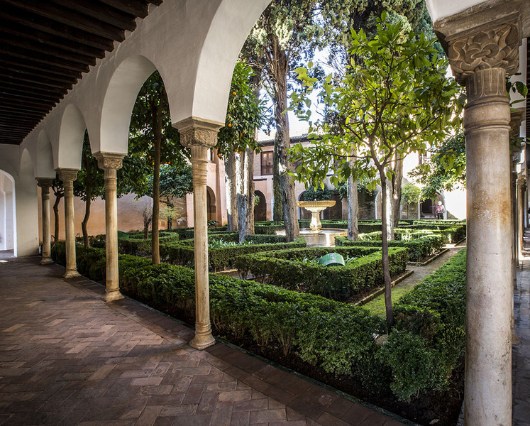

| |
Alhambra. Patrimonio de la Humanidad |
|---|

| |
Alhambra. Patrimonio de la Humanidad |
|---|

En el contexto de adecuación del palacio islámico a sus nuevos usos cristianos, se proyectó la construcción de una serie de habitaciones que unían el Palacio de los Leones con el de Comares, estas habitaciones estan atribuida a la época de Carlos V aunque algunos investigadores han señalado unas posibles intervenciones en la época de los Reyes Católicos.
Las nuevas salas se organizaron por medio de un corredor internamente comunicado y en torno a un patio irregular, abandonándose las formas de disposición islámica basadas en cédulas independientes en torno a un patio y por tanto transformándose la comunicación entre las estancias.
La primera estancia, conocida como Despacho del Emperador, conserva una chimenea y un artesonado, realizado en 1532 por Pedro Machuca, a continuación una antecámara por la que se accede a los dormitorios reales. Sobre la puerta se conserva una placa de mármol colocada en 1914 en recuerdo al célebre escritor norteamericano Washington Irving, quien se hospedó en las salas conocidas como “Salas de las Frutas”. Entre 1535 y 1537, Julio Aquiles y Alejandro Mayner, cercanos a Rafael, fueron los encargados de pintar las paredes de estas estancias. Composiciones netamente renacentistas llenaban las paredes, pintura que se ha perdido casi por completo ya que fueron cubiertas con yeso en repetidas ocasiones desde el siglo XVIII.